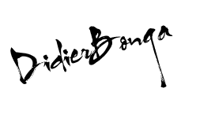

Didier Bonga
Software engineer
Passion is one key ingredient of being good in any profession.As a software engineer, we are expected to be learning every day.Every day new challenges comes to us and this is awesome as we're not stagnating in the job market but building up lots of experience as the time passes.
ABOUT ME
Moved from Russia to USA five months ago, I have accumulated many experiences in the field of computer networks and the LTE communication system.
Currently attending CodeCrew Code School. Focused, meticulous and competent in many computer languages. Software developer determined, able to "think differently". Willing and enthused to resolve challenges in the most efficient manner.
A passionate leader who likes working with all types of personalities. Diversity is the basis of creativity, the latter more than necessary to improve what already exists and create what does not exist but demands by all.
Future graduate, proactive and hardworking, seeking the opportunity to design new software applications and support stakeholders’ projects and requirements.